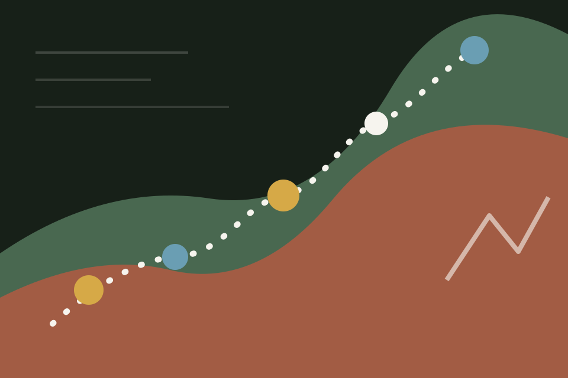

Research
Mathematical modeling and analysis for the Big Questions in cognitive neuroscience.
Mathematical modeling and analysis for the Big Questions in cognitive neuroscience.
Exploring a wide range of topics in mathematics, physics, psychology, and philosophy.
Rock climbing and some other sports to keep the body and mind in shape.
I moved from the School of Mathematical Sciences into the School of Psychological and Cognitive Sciences at Peking University. My current interests sit around theoretical neuroscience and computational cognitive neuroscience.
I have been a long-term undergraduate intern in Prof. Si Wu's lab, and my independent undergraduate research project (under the supervision of Prof. Hang Zhang) received funding from the National Training Program of Innovation for Undergraduates.
How does the brain generate hypotheses about the world from sparse sensory inputs?
How does the brain make non-present spatial, temporal, or causal events operative?
How does the brain abstract an Actionable Latent Space from chaotic sensory inputs?

I am a member of the Mountaineering Association of Peking University. Rock climbing is part of my weekly life.
"Stoicism Point" is my WeChat Official Account where I share my thoughts, ideas, and observations.
I update my course notes on Plib and offer tutoring for calculus, linear algebra, probability, and statistics.
If we share a research interest, a climbing route, a book, a class, or a half-formed idea, I am happy to talk.